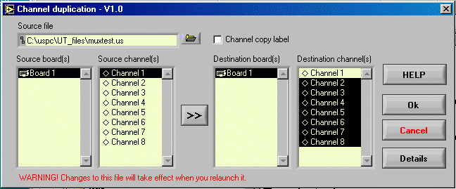
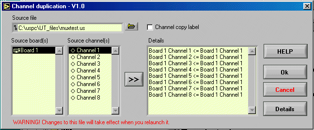

Help_duplication_us.htm
Version 1.0 30 November 2001

(Duplication_picture1_us.gif)

(Duplication_picture2_us.gif)
Use this tool to copy from channel to others.
Warning: This tool works with UT file and do not
modify current parameter setting. So you must relaunch UT file if you want it
in effect.
HELP Display
this help.
Ok Save
the duplication and exit.
Cancel Exit
without duplication.
Details Display
the duplication panel.
>> Copy
button
Channel copy label: If
this case is checked, the origin label will be duplicated as well.
Select a origin board and channel to be duplicated
then select channel(s) to the board to send duplication.
Clic on “>>” button to send duplication.
Clic onn “Ok” to confirm or “Cancel”.